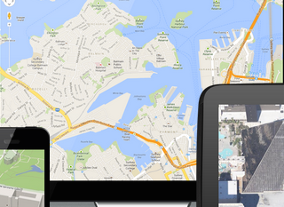

Techniques and Tutorials used
I consider Spring Security the most important functional component in my project. Different roles will be dispatched to different work place.
Read More
In this project, only a small part of DOJO is used, mainly around the form submit and validation.
Read More

The Google Maps are used to displayed the location and the tracks of vehicles
Read More